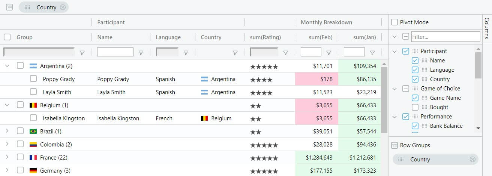

React Data Grid Examples used on the AG Grid blog.
See the Posts:
Feel free to clone, fork or download this repo to use as a base for learning about AG Grid.
In addition to this repo, we also have a repo used to support our testing as well as provide example use cases:
The React Data Grid Example repo has three different project samples.
We also maintain a Showcase page which lists public live examples of AG Grid usage.
Our documentation based Getting Started Guide covers the enterprise edition as well.
ag-Grid is a fully-featured and highly customizable JavaScript data grid. It delivers outstanding performance, has no 3rd party dependencies and integrates with React. Here's how our grid looks like with multiple filters and grouping enabled:

A React Data Grid is different from a React Grid or a React Table.
A React Grid refers typically to a layout control to create a responsive grid layout to organise child components.
A React Table, React Data Table or React Data Grid refers to a component that can render rows and columns of data and allow the user to interact with the data, e.g. sorting and filtering data, exporting data, and in-cell editing.
AG Grid is a React Data Grid for data-driven tabular rendering. Configuration based to offer a rich user experience out of the box with minimal programming. AG Grid can be extended to cover project specific requirements and can also be used with Angular, Vue and JavaScript.
Read more about the differences between a Data Grid and a Table here.
Both Data Tables and Data Grids offer teams the ability to customise with additional features and work with external libraries. With a Data Grid, you should require fewer external libraries and dependencies because the Data Grid is designed to do more heavy lifting out of the box.
Besides the standard set of features you'd expect from any grid:
Here are some of the features that make ag-Grid stand out:
* The features marked with an asterisk are available in the enterprise version only.
Check out developers documentation for a complete list of features or visit our official docs for tutorials and feature demos.